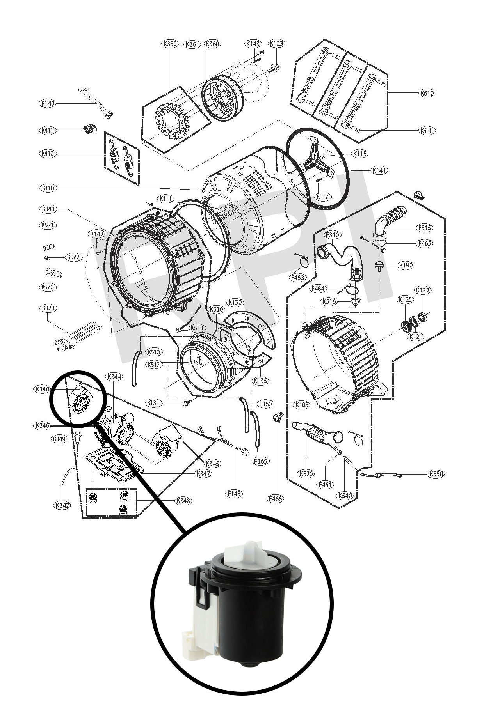
The Drain Pump Assembly
The diagram highlights the drain pump within the lower pump assembly. The enlarged component view shows the pump motor and impeller discussed in this repair story.
For this LG WM9000HVA washer in Noblesville, Indiana, the customer reported that water was not draining. Our diagnosis identified a drain pump that required replacement. The service photographs below document the repair and post-repair testing.
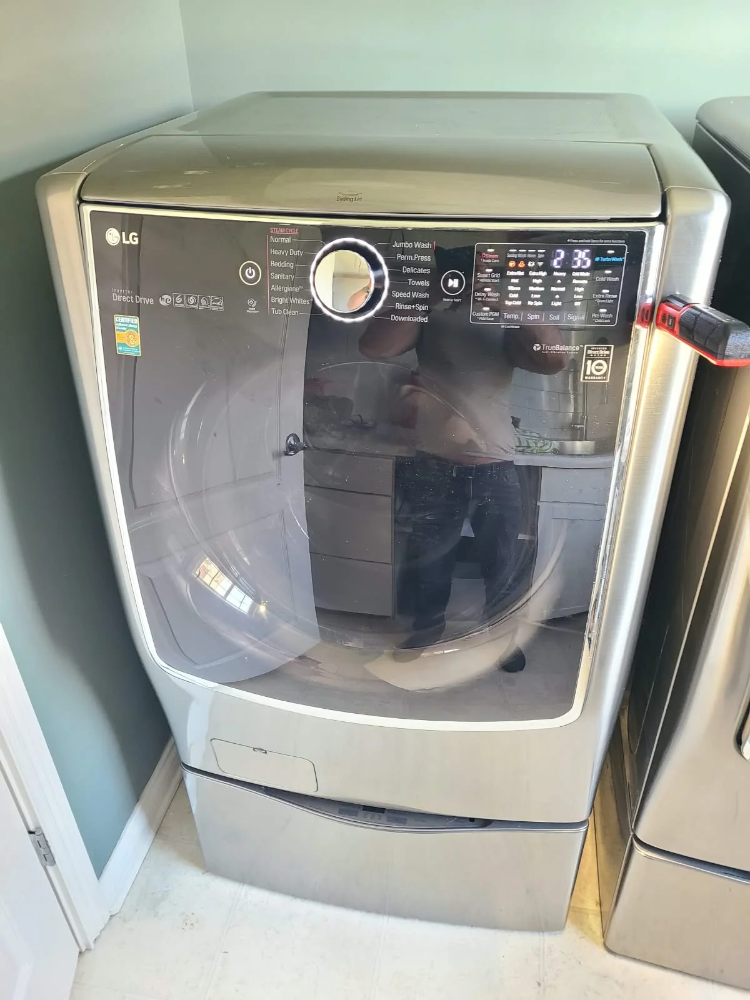
From a Washer That Would Not Drain to Working Laundry Again
A washing machine that stops draining can bring the household laundry to a standstill. For this customer in Noblesville, Indiana, the problem led to a service call to Alex Appliance Repair: their LG front-load washer was not draining water.
Our on-site diagnosis found that the drain pump needed replacement. We replaced the pump, put the machine back together and tested all cycles. The washer drained again and returned to working order. The photographs in this story follow the actual repair, from access to the original pump through reassembly and testing.
The Washer: LG WM9000HVA
The appliance label identifies this washer as LG WM9000HVA. The original model-number crop is shown here so the repair is tied to the machine actually serviced.
A model number is more useful than appearance alone when discussing a repair. If you contact us about an LG washer that will not drain, include the full model and describe what happens when the machine should remove the water.
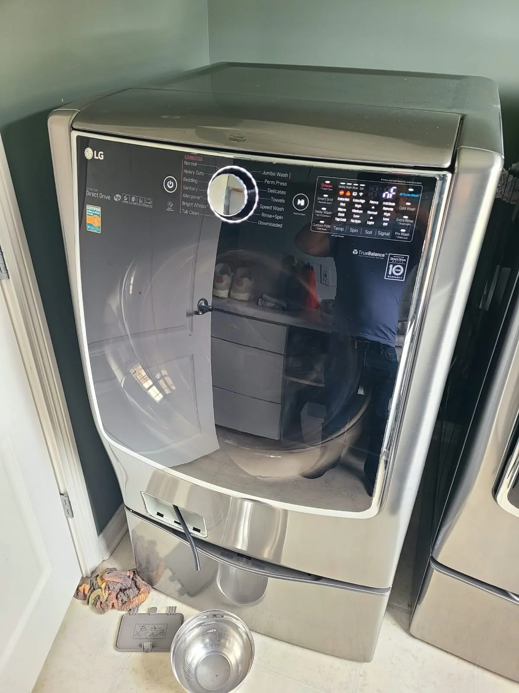
The Customer Complaint and Diagnosis
The reported symptom was straightforward: the washing machine would not drain. After evaluating the appliance at the Noblesville home, we determined that its drain pump required replacement.
That finding applies to this washer. A drainage complaint is not, by itself, proof that every machine needs a new pump. The water path and individual appliance must be assessed before choosing a repair.
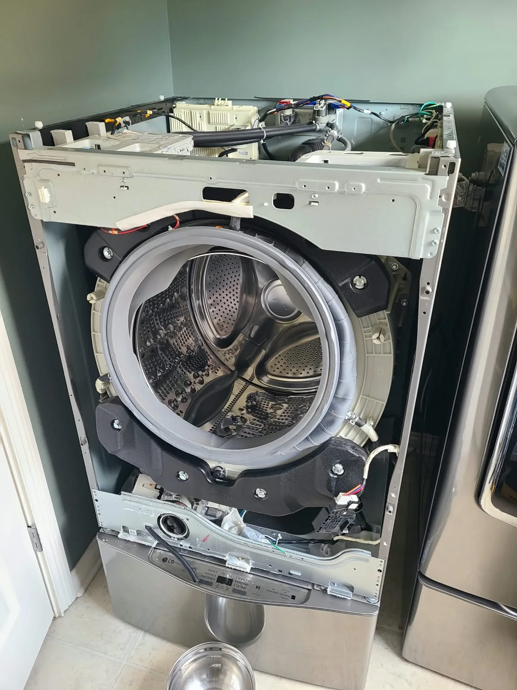
Accessing the Lower Pump Assembly
The service photographs show the front panel removed, exposing the drum, door boot and lower pump area. The drain pump assembly sits below the tub, behind the front of the cabinet.
Opening the small filter cover and accessing the pump motor are different tasks. This repair required access to the internal assembly. The photographs document professional service, not a procedure for operating the washer while disassembled.
Documenting the Original Pump Before Replacement
The close-up shows an electrical connection on the original pump. The next photograph shows the assembly outside the cabinet, including its housing and mounting base. Together, these views establish the before-replacement stage of the repair.
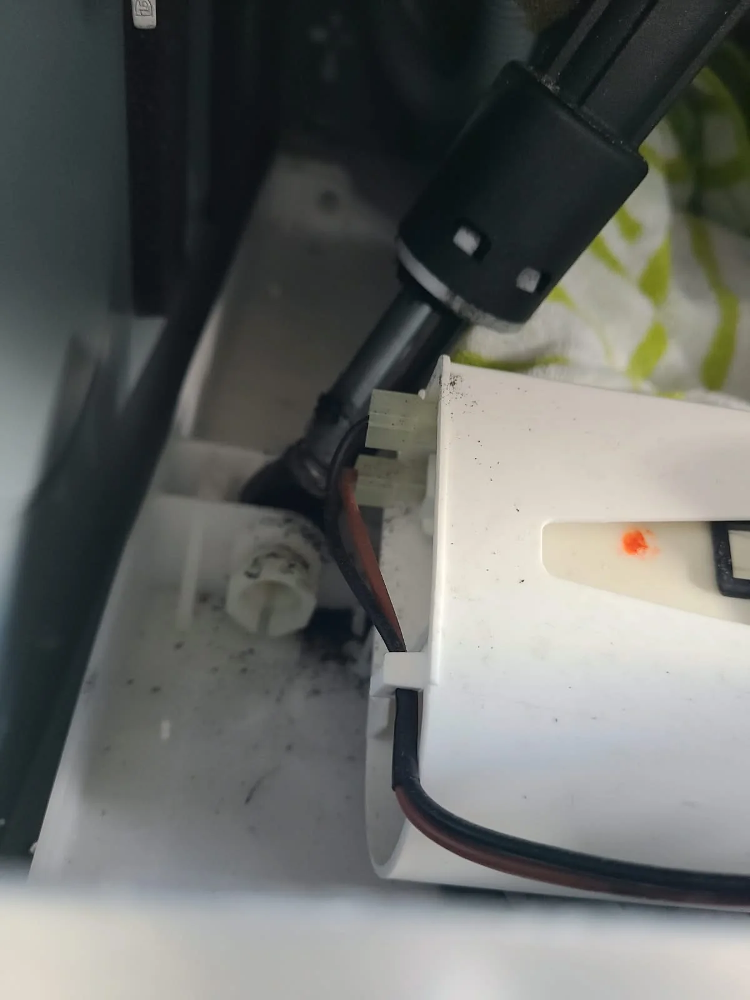
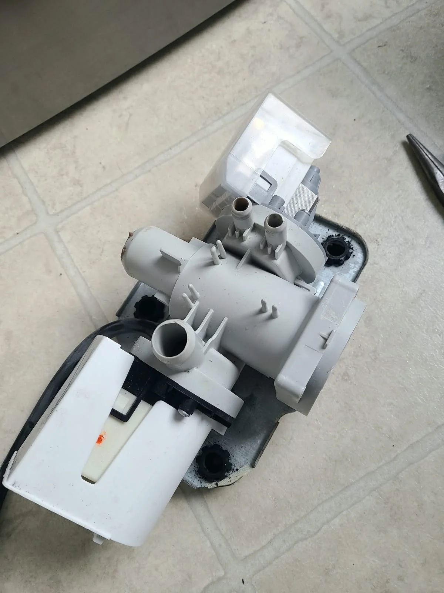
Replacing the Drain Pump
The removed pump's white impeller is visible in the close-up below. This component belongs to the system that moves water out of the washer; it is separate from the drive system that rotates the drum.
We replaced the drain pump identified during diagnosis. The second photograph shows the detached pump beside the assembly during the replacement work. These are photographs from the service visit, rather than catalog illustrations.
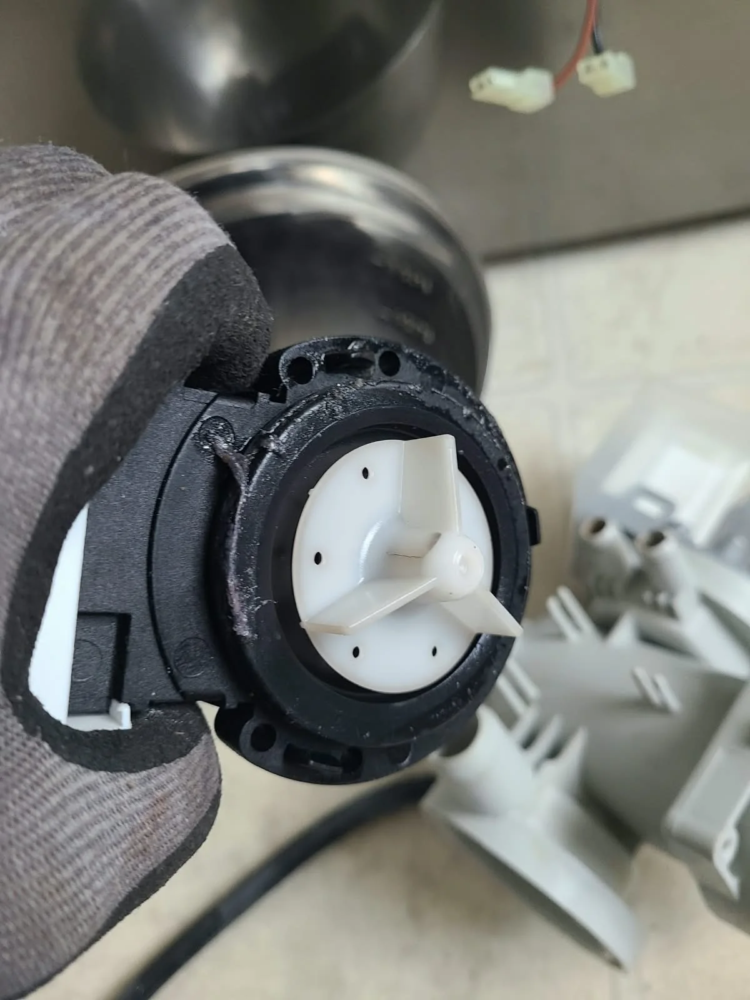
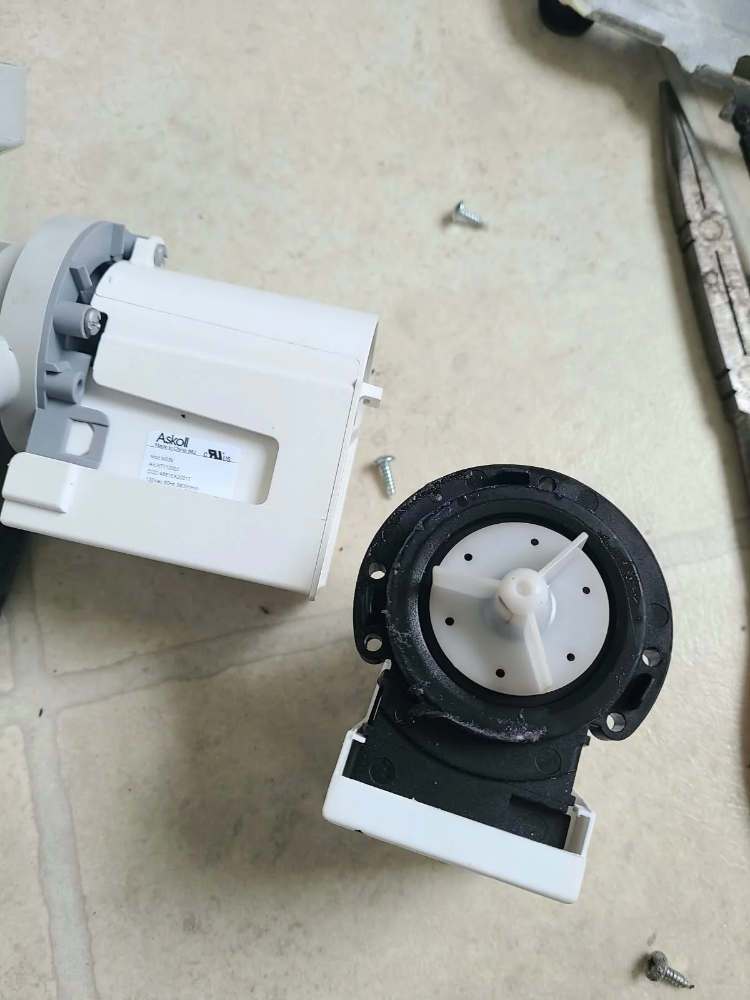
Reinstalling the Assembly and Reconnecting the Hoses
After the pump replacement, the assembly went back into the lower cabinet. The first image shows it positioned before hose reconnection; the second shows the hoses back in place. This sequence documents the return from component replacement to an assembled drain system.
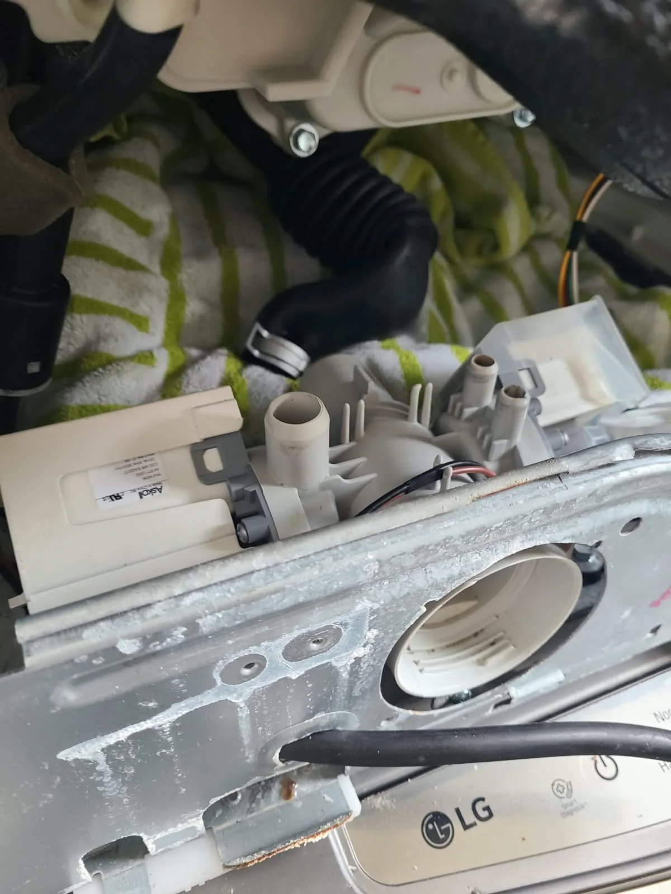
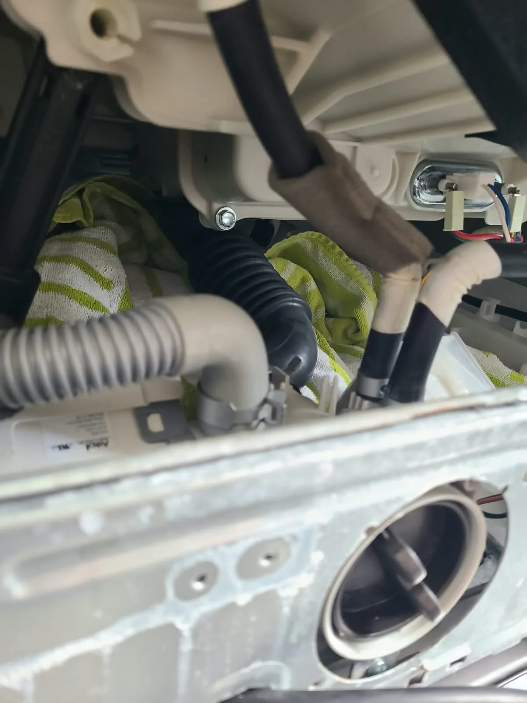
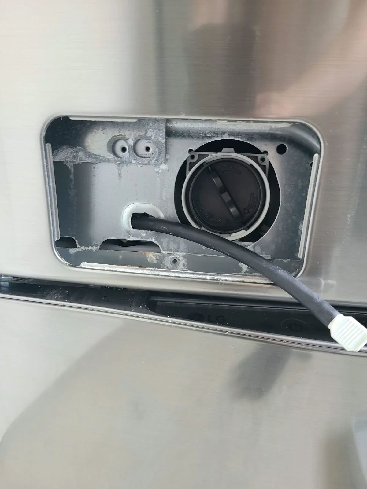
Putting the Washer Back Together
The drain filter cap was reinstalled, and the washer was reassembled. In this detail photograph, the lower service opening is still visible before its cover was closed.
The completed exterior photograph at the beginning of this story shows the next stage: the machine back together, its service cover closed and its control panel powered on for testing.
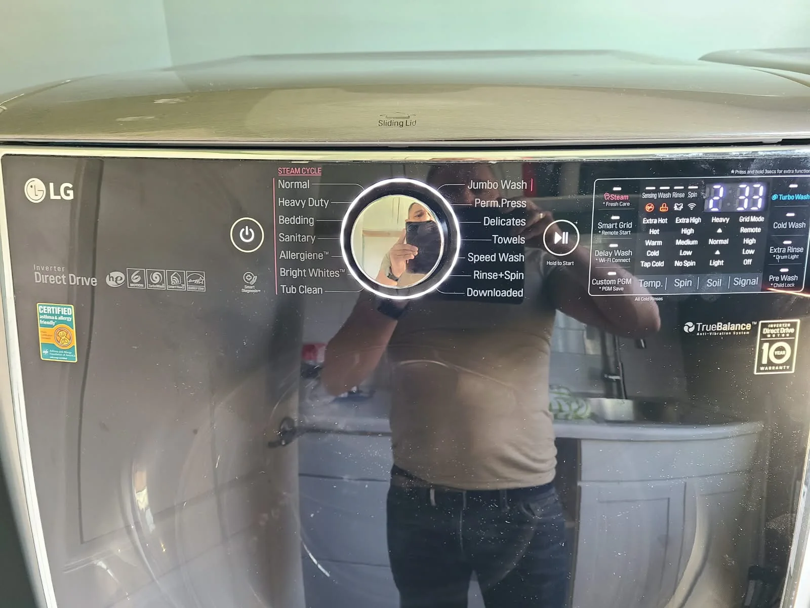
Post-Repair Testing: All Cycles Checked
Replacing the component was followed by testing the assembled washer. All cycles were tested after the repair, and the machine was working again, including draining water as intended.
The control-panel photograph records part of that testing stage. The outcome of this Noblesville repair was a working LG WM9000HVA after drain pump replacement, rather than a washer left disassembled or awaiting further repair.
Questions About an LG Washer That Will Not Drain
Does a washer that will not drain always need a pump?
No. A blocked filter or a restricted drain hose can also cause drainage trouble. LG's water-not-draining guidance discusses these possibilities. In the repair documented here, the diagnosis was a pump that required replacement.
Is cleaning the filter the same as replacing the drain pump?
No. The filter is an accessible part of the drainage system; the pump motor is a separate component inside the cabinet. This service involved replacing the pump, not just opening the filter cover.
What information should I share when booking service?
Send the model number, your service location and a description of the symptom. Mention whether water remains inside and share any error code actually displayed. For this visit, the documented model was WM9000HVA and the reported issue was failure to drain.
How much does drain pump replacement cost?
The estimate depends on the diagnosis, the correct part for the appliance and the work needed. Contact us to discuss your washer; we explain the diagnosis and estimate before approved repair work.
Book LG Washer Repair in Noblesville, Indiana
If your LG washing machine is not draining, Alex Appliance Repair provides washer repair in Noblesville. Tell us the model, symptoms and service address when scheduling an appointment.
Read more about our washing machine repair services, check Noblesville service coverage, or explore more repair stories with original photographs. Alex Appliance Repair is an independent appliance repair service operated by Aksenov LLC.
Call (463) 248-8429 to discuss your washer, or schedule online.
Book washer repair